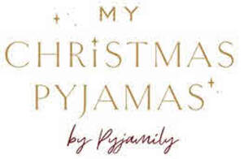

Trade Mark Journal No.2025/031 1 August 2025
UK00004206529 20 May 2025 (18,25,35)

- Class 18
- Pet clothing; garments for pets; pet leads; collars for pets; electronic pet collars; bags for carrying pets; animal carriers [bags]; pet hair bows.
- Class 25
- Sleepwear; nightwear; pyjamas; combinations [clothing]; night gowns; nightshirts; nightdresses; nighties; sleepsuits; sleepshirts; bed jackets; dressing gowns; lounging robes; bathrobes; maternity sleepwear; layettes [clothing]; one-piece clothing for infants and toddlers; underwear; underclothing; thermal underwear; negligees; lingerie; hosiery; peignoirs; bras; briefs [underwear]; sleep masks; headbands [clothing]; bed socks; slipper socks; slippers; teddies [undergarments]; baby doll pyjamas; Japanese sleeping robes [nemaki]; swimwear; beachwear; fancy dress costumes.
- Class 35
- Advertising; advertising services; promotional services; promotional marketing; marketing services; on-line customer-based social media brand marketing services; production of advertising matter; advertising via the internet; arranging and conducting of promotional events; arranging of product launches; promoting the goods and services of others through the distribution of boxes filled with assorted items; compilation, production and dissemination of advertising matter; distribution of advertising, marketing and promotional material; electronic billboard advertising; event marketing; magazine advertising; product launches; product demonstrations and product display services; online ordering services; electronic, telephone and online shopping retail services in relation to the sale of pet clothing, garments for pets, pet leads, collars for pets, bags for carrying pets, animal carriers [bags], pet hair bows, sleepwear, nightwear, pyjamas, combinations [clothing], night gowns, nightshirts, nightdresses, nighties, sleepsuits, sleepshirts, bed jackets, dressing gowns, lounging robes, bathrobes, maternity sleepwear, layettes [clothing], one-piece clothing for infants and toddlers, underwear, underclothing, thermal underwear, negligees, lingerie, hosiery, peignoirs, bras, briefs [underwear], sleep masks, headbands [clothing], bed socks, slipper socks, slippers, teddies [undergarments], baby doll pyjamas, Japanese sleeping robes [nemaki], swimwear, beachwear, fancy dress costumes; subscription services, namely on-line retail store services connected with subscription boxes containing assorted items relating to clothing; online and offline retail, import, export and wholesale services relating to the sale of pet clothing, garments for pets, pet leads, collars for pets, bags for carrying pets, animal carriers [bags], pet hair bows, sleepwear, nightwear, pyjamas, combinations [clothing], night gowns, nightshirts, nightdresses, nighties, sleepsuits, sleepshirts, bed jackets, dressing gowns, lounging robes, bathrobes, maternity sleepwear, layettes [clothing], one-piece clothing for infants and toddlers, underwear, underclothing, thermal underwear, negligees, lingerie, hosiery, peignoirs, bras, briefs [underwear], sleep masks, headbands [clothing], bed socks, slipper socks, slippers, teddies [undergarments], baby doll pyjamas, Japanese sleeping robes [nemaki], swimwear, beachwear, fancy dress costumes; business management, organisation and administration; office functions; information, consultancy and advisory services; advisory, consultancy and information services in relation to clothing and sleepwear.
Pyjamily Limited
Representative: Marks & Clerk LLP